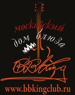
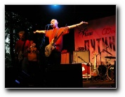
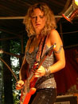
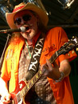

Блюз-фестивали московского клуба B.B.King ИСТОРИЯ ФЕСТИВАЛЯ:
Репортаж и фоторепортаж о фестивале >>>  Второй фестиваль блюза прошел в 2005 году. Титульным спонсором выступила торговая марка "Путинка". По просьбе спонсора в программу акции были включены выступления групп "Неприкасаемые" и "Ва-банкъ". На фестиваль "Путинка-Блюз" пришло более 3 тыс. человек. Концерт начался в 12.00, а закончился в 2 часа ночи. По мнению BBC, этот фестиваль стал самым организованным в истории московских open air.
БЛЮЗ-ФЕСТИВАЛЬ 2007 г.Официальный пресс-релиз фестиваля 2007 г.:  11 августа в парке "Лефортово" при поддержке Московского дома блюза "Би Би Кинг" состоится IV Московский международный фестиваль блюза - единственный в России ежегодный 12-часовой блюзовый марафон под открытым небом. Хедлайнерами мероприятия станут выдающиеся американские блюз-гитаристы Ана Попович и Марк Форд.Уроженка Югославии и выпускница Голландской академии в Утрехте, певица и гитаристка Ана Попович обладает огромным количеством наград и регалий. После американского турне в 2005 году Ану признали звездой мирового уровня, а сама она переехала на постоянное место жительства в США. SOBO (СОБО) – ЭТО ИНТЕРНАЦИОНАЛЬНЫЙ РУССКО-АМЕРИКАНСКИЙ ПРОЕКТ, СОЧЕТАЮЩИЙ АМЕРИКАНСКОЕ, РУССКОЕ И ВОСТОЧНОЕ ВЛИЯНИЯ. На данный момент к участию в фестивале готов проект Kiev Blues Union, куда входят гитаристы группы Second Breath, Макс Таврический и приглашенная специально по этому поводу ритм-секция. По словам арт-директора проекта Сергея Воронова, фестиваль призван удовлетворить потребности взрослой и образованной публики в качественной музыке, расширить представления молодежи об истории и развитии музыкального искусства. "Блюз, - утверждает Сергей, - это родоначальник всех современных музыкальных стилей - от джаза до r'n'b. И поэтому он достоин внимания публики, а фестиваль блюза станет мероприятием, которое нельзя пропустить. Кроме того, в этом году наш партнер - компания "РОСГОССТРАХ" - сделала подарок для зрителей: вход для всех обладателей страхового полиса "РОСГОССТРАХ Квартира" абсолютно бесплатный". Парк "Лефортово". 11 августа 2007 г., 12.00 - 24.00
БЛЮЗ-ФЕСТИВАЛЬ 2008 г. 6 сентября 2008 года в Лефортовском парке состоялся почти юбилейный (поскольку пятый по счету) фестиваль под эгидой клуба B.B.KING (а самому клубу, действующему как "Московский дом блюза", ноне исполнилось 15)… В разные годы по разным причинам фестиваль носил разные названия. Эти перемены в заголовке были связаны с капризами спонсоров, без которых фестиваль не мог бы привлечь зарубежных гостей, или таких наших звезд, как "Ва-Банк" и Гарик Сукачев (хотя его присутствие на блюз-фестивале вызывало скорее недоумение, при всем к нему уважении). Однажды фестиваль носил имя "Путинка" - наверное, нет нужды объяснять, почему…Пройдя через множество финансово-организационных испытаний, фестиваль вырос и окреп. Стоит поблагодарить организаторов, но без поддержки публики, пожалуй, любые их усилия были бы тщетными. Из года в год посещаемость фестиваля растет стабильно. А главное, в старинном московском парке вдруг сложилась особая атмосфера блюзовой общины. В нынешнем году фестиваль совпал с празднованием Дня города, попал в список официальных мероприятий… И попутно лишился пива. Не то, чтобы пиво абсолютно необходимо для восприятие блюза. Но вот категорический запрет на возможность "выпить кружку" никак не совпадал с тем, что гордо декларируется в блюзе "свободой духа". Впрочем, на контроле секьюрити были весьма либеральны, не пропуская напитки в стеклянной или жестяной таре. Зато стоит отметить, что вся техническая часть была организована и поставлена на высшем уровне. Это касается даже таких мелочей, как отсутствие очередей у туалетных кабинок. А уж сцена и звук соответствовали уровню. Если в предыдущие годы качественный звук можно было услышать лишь непосредственно на танцевальном квадрате перед сценой, то на этот раз даже усевшись на стул поодаль, можно было и сцену хорошо видеть, и музыку слушать во вполне приятном качестве. Ну а теперь о начинке… Блюз-фестиваль в Лефортово замечателен тем, что не устраивает сегрегацию блюза отечественного от блюза американского. По традиции, был представлен весь цвет московского блюза и несколько гостей из других городов. В предыдущие годы для завсегдатаев московских клубов наиболее интересным оказывалось знакомство с молодежью, поскольку они предлагали нечто новенькое. На этот раз приятно удивили ветераны. Впрочем, Николай Арутюнов и Funky Soul уже хорошо обкатали свою программу в больших клубах. Именно в "больших", поскольку не каждый клуб способен принять команду из 10 человек. Это настоящий фанк и соул – название не обманывает – в мощном, сочном, сверхъэнергичном звучании. Арутюнов выстраивает программу как ревю, в котором находится возможность солировать большинству из участников ансамбля. Особо стоит отметить гитариста Юрия Новгородского. Он и музыкант отменный, и шоумен неплохой. Николай Арутюнов, большой человек и масштабная личность, всегда доминирует на сцене. Но Новгородского это нисколько не смущает, он делает свое дело так, что и его вклад нельзя не заметить. А уж вокально-гитарную дуэль была встречена публикой "на ура", столько в ней было азарта соперничества вкупе с полным взаимопониманием и равенством в исполнительском мастерстве… В фанк-музыке и блюзе Николай Арутюнов давно и заслуженно имеет репутацию лучшего вокалиста. Но не почивает на лаврах, а находит новые и новые нюансы пения, не утрачивая знакомой мощности драйва. Всего месяц спустя после фестиваля появился новый студийный альбом под названием "Николай Арутюнов & Funky Soul". Crossroadz, которым из публики привычно выкрикивали "Diamond Rain", свой старинный хит как раз и не показали. Качественно отыграв несколько блюзовых стандартов (вроде The Sky Is Crying), группа перешла к свежей программе, в большинстве состоящей из песен, недавно записанных Сергеем Вороновым в лондонской студии для нового альбома. Еще не обкатанная на концертах, программа звучала иногда "сыровато"… Однако группа настолько сыграна, что это нисколько не портило общее впечатление. Наоборот, добавляло ощущение свежести импровизации. Зарубежные гости были хороши каждый по-своему. Первым на сцену вышел Кенни Нил (Kenny Neal). В прямом смысле он - наследник давних традиций, поскольку является членом большой музыкальной семьи. Основателем этого блюзового клана Нилов является его отец, легендарный луизианский певец и харпер Рафул Нил. В Москве Кенни сыграл очень мягкий, проникновенный вариант соул-блюза. Играя попеременно на гитаре и губной гармонике, он пел невзначай о легкомысленных интрижках, и всерьез – о глубоких отношениях. Кенни умеет играть на больших площадках. Этим летом он стал триумфатором на Чикагском блюз-фестивале, собирающем под открытым небом более 100 000 человек. Но в Лефортово он держался скромно и негромко. И, к сожалению, московская публика осталась к нему вежливо прохладна. Даже когда он угостил ее на прощание фирменным маршей из своего родного Нового Орлеана: When The Saints Go Marching In. фото... Lil'Ed & the Blues Imperials в Москве уже бывали в начале века – в программе Efes Blues festival. С тех пор он успел попрощаться с блюзом, пуститься во все тяжкие, исправиться и жениться. Теперь он сочиняет очень симпатичные песни о своей былой лихой жизни. Сочиняет он их в соавторстве с супругой, так что рассказы о прошлых подвигах подаются под соусом "не надо так плохо себя вести, как вел себя я" ("Чтобы начать жить, я должен был перестать умирать" - строчки из новой песни "I Had To Stop Dying"). А вот музыка осталась прежней: бугивуги под заводной чикагский слайд! А на сцене – яркий театр клоунской мимики и выразительного жеста. фото... Сумерки сгустились, когда на сцену вышел Эрик Сардинас (Eric Sardinas). Весь его внешний вид говорил о том, что блюз при дневном свете он не играет. Черный кудри из под шляпы, прячущей глаза, обилие феничек, брелочков и колец, брюки клеш со шнурованным гульфиком… Даже его гитара-добро выглядела так, словно ее недавно достали со дна морского. Он играл громко и зловеще. И, к сожалению, грязновато. Когда он заиграл соло в акустику "Hellhound On My Trail" Роберта Джонсона, была надежда понять, почему он играет именно на добро. Она не оправдалась – никакими особыми качествами этого инструмента он не пользуется. Впрочем, это с точки зрения ценителей блюзовых традиций. Судя по аплодисментам, именно громогласный и тяжеловесный триллер-блюз Сардинаса был признан самым ярким выступлением за вечер. Посвященный памяти недавно умершего Джефа Хилли Roadhouse Blues прозвучал искренне и выразительно. фото... Фестиваль завершил общий джем. (фото...) И тут стоит подчеркнуть, что все три заокеанских гостя представляют сливки современной блюзовой сцены США. И приехали они на пике исполнительской формы: все трое в этом году выпустили новые альбомы и сейчас активно и с успехом гастролируют на родине и в Европе. Даже с чисто формальной точки зрения их появление в Лефортово значительно повышает статус фестиваля. В нынешнем году объявлено, что фестиваль обретает постоянное название: "Qвадрат". Зато теряет свою постоянную прописку в Лефортово: парк закрывается на долгую реконструкцию. Но определенно, с новым названием и на новом месте в следующем году фестиваль сохранит и преумножит свою аудиторию. Постфестиваль прошел в теплой и дружеской обстановке... Андрей Евдокимов Радио "Свобода" о фестивале Блюз Qвадрат >>> |
 Первый Московский фестиваль блюза в Лефортове состоялся летом 2004 года и был посвящен 10-летию клуба "Би Би Кинг". Спонсорами акции стали члены клуба и частные лица. В концерте, который длился целый день, приняли участие лучшие московские музыканты, которые исполняют блюз, рок-н-ролл, фанк, а специальным гостем фестиваля стал Константин Никольский. Мероприятие посетило 1.500 человек.
Первый Московский фестиваль блюза в Лефортове состоялся летом 2004 года и был посвящен 10-летию клуба "Би Би Кинг". Спонсорами акции стали члены клуба и частные лица. В концерте, который длился целый день, приняли участие лучшие московские музыканты, которые исполняют блюз, рок-н-ролл, фанк, а специальным гостем фестиваля стал Константин Никольский. Мероприятие посетило 1.500 человек. Третий фестиваль был назван "Be Famous Blues" и впервые получил статус международного. Хедлайнером "Be Famous Blues" стал один из лучших гитаристов блюз-рока из США Крис Дуарте. Кроме американских музыкантов, в 2006 году на фестивале выступил гитарист из Норвегии Кид Андерсон, который произвел на публику не меньшее впечатление. Несмотря на очень холодную погоду, на фестиваль пришло около 2 тыс. человек.
Третий фестиваль был назван "Be Famous Blues" и впервые получил статус международного. Хедлайнером "Be Famous Blues" стал один из лучших гитаристов блюз-рока из США Крис Дуарте. Кроме американских музыкантов, в 2006 году на фестивале выступил гитарист из Норвегии Кид Андерсон, который произвел на публику не меньшее впечатление. Несмотря на очень холодную погоду, на фестиваль пришло около 2 тыс. человек.